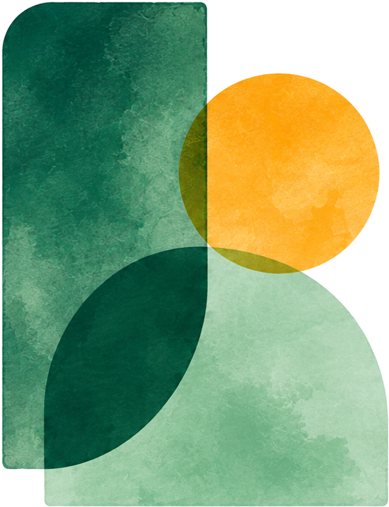

A new chapter is taking shape
Ideas into
impact.
We apply machine learning and economic modeling to understand and address structural poverty — helping create pathways to greater economic mobility. Our next chapter is taking shape.

01 / 01RESEARCH FOR HUMAN FLOURISHING
WHAT WE’RE ABOUT
Research-led thinking.
Real-world impact.
Orison Project is a growing project focused on exploring ideas and turning them into useful digital work. We bring together creative thinking, technology and a hands-on approach to shape solutions that are clear, considered and made to move things forward.
We’re building evidence-led approaches that connect rigorous research with practical pathways toward human flourishing and economic equity.